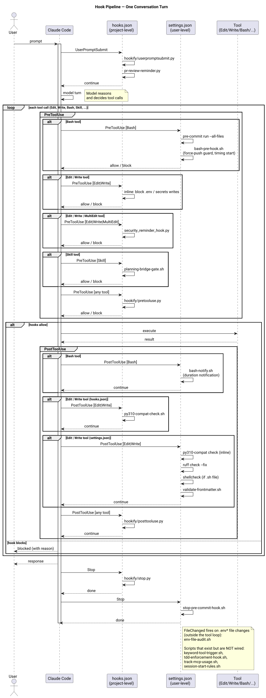

Hook Pipeline
Claude Code fires hooks at six points during a session. These hooks enforce quality gates, route behavioral rules, and extend Claude's capabilities without requiring model-level changes. The repo-managed hook definitions live in hooks.json at repo root and are merged into ~/.claude/settings.json by setup.sh; that file is the baseline, but it is not the only source Claude Code executes hooks from. See Hook Sources below for the full taxonomy and the drift check that guards it.
For the design decisions behind this system, see ADR-002 and ADR-010.
The Six Hook Types¶
UserPromptSubmit: fires immediately after the user sends a message, before Claude processes it. Used for: injecting context, detecting intent signals (PR review reminder), running the hookify user prompt pipeline.
PreToolUse: fires before each tool call Claude attempts. Each entry in the PreToolUse array can have a matcher regex targeting specific tools. Used for, in hooks.json array order: bash command guard (Bash), secrets file guard (Edit/Write/MultiEdit), planning bridge gate (Skill), security reminder (Edit/Write/MultiEdit), hookify dispatch (all tools), destructive-command guard (Bash).
PostToolUse: fires after each tool call completes. Used for, in hooks.json array order: Python 3.10 compatibility check (Edit/Write), Snyk dependency-manifest reminder (Edit/Write/MultiEdit), test-skip-marker guard (Edit/Write/MultiEdit), hookify dispatch (all tools).
Stop: fires when Claude finishes its turn (before control returns to the user). Used for: hookify stop handler.
PreCompact: fires immediately before Claude Code compacts the conversation, whether triggered automatically (approaching the context limit) or manually (/compact). Used for: writing a cheap, objective auto-handoff snapshot as a backstop for the unattended-autocompact case.
SessionStart: fires when a session opens, and again on resume, clear, or compact, depending on which matcher a given hook registers. Three repo-managed hooks are wired here (scripts/hooks/delegation-reminder.sh, scripts/hooks/cbm-context-reminder.sh, scripts/hooks/handoff-resume-reminder.sh), alongside SessionStart hooks contributed by installed plugins. No .claude/rules/*.md file is injected at this point or any other; rules enter context only when Claude follows a CLAUDE.md pointer to one, or a hook prints its content directly, which is exactly what these hooks do.
Diagram¶

Execution Order Across a Turn¶
A single user message triggers the following hook sequence:
User sends message
→ UserPromptSubmit[0]: hookify userpromptsubmit.py
→ UserPromptSubmit[1]: pr-review-reminder.py
Model processes, issues tool calls:
For each Bash call:
→ PreToolUse[0]: bash-pre-hook.sh (matcher: Bash)
→ PreToolUse[4]: hookify pretooluse.py (all tools)
→ PreToolUse[5]: destructive-command-guard.sh (matcher: Bash)
→ Tool executes
→ PostToolUse[3]: hookify posttooluse.py (all tools)
For each Write or Edit call:
→ PreToolUse[1]: secrets file guard (matcher: Edit|Write|MultiEdit)
→ PreToolUse[3]: security reminder (matcher: Edit|Write|MultiEdit)
→ PreToolUse[4]: hookify pretooluse.py (all tools)
→ Tool executes
→ PostToolUse[0]: py310-compat-check (matcher: Edit|Write)
→ PostToolUse[1]: snyk-dep-reminder.sh (matcher: Edit|Write|MultiEdit)
→ PostToolUse[2]: test-skip-guard.sh (matcher: Edit|Write|MultiEdit)
→ PostToolUse[3]: hookify posttooluse.py (all tools)
For each Skill call:
→ PreToolUse[2]: planning bridge gate (matcher: Skill)
→ PreToolUse[4]: hookify pretooluse.py (all tools)
→ Tool executes
→ PostToolUse[3]: hookify posttooluse.py (all tools)
For any other tool call:
→ PreToolUse[4]: hookify pretooluse.py (all tools)
→ Tool executes
→ PostToolUse[3]: hookify posttooluse.py (all tools)
Model turn ends
→ Stop[0]: hookify stop.py
If context is compacted (auto or manual), separately from the turn cycle:
→ PreCompact[0]: precompact-handoff.sh
Array position determines execution order within each hook type. Matcher-specific entries run only when their regex matches the tool being called.
Per-Hook Responsibilities¶
SessionStart¶
Fires once per session-open event, before the turn cycle described above begins; it is not part of the per-turn sequence.
| Matcher | Script | What it does |
|---|---|---|
startup\|resume\|clear\|compact |
scripts/hooks/cbm-context-reminder.sh |
Repo-managed; listed first in hooks.json, so it runs first. Prints the codebase-memory-mcp discovery protocol (prefer search_graph/trace_path/get_code_snippet/get_architecture over Grep/Glob for code exploration). Replaces the binary-managed ~/.claude/hooks/cbm-session-reminder entry that codebase-memory-mcp install writes, so the wording survives a binary upgrade |
startup\|resume\|clear\|compact |
scripts/hooks/delegation-reminder.sh |
Repo-managed. Prints the delegation protocol reminder (dispatch subagents for exploration, well-specified implementation, and review; never silently absorb a failed dispatch inline) and refreshes the task-observer skills manifest, warning on stdout if the refresh fails |
startup\|resume\|clear\|compact |
scripts/hooks/handoff-resume-reminder.sh |
Repo-managed. Checks for the single overwritten backstop file ~/.claude/logs/handoffs/auto-precompact-latest.md written by precompact-handoff.sh and, if present, prints its branch/dirty-count/timestamp content as session-start context, labeled STALE past 48 hours. Prints nothing when the file does not exist. Complements, does not replace, the manual /handoff skill's timestamped archive |
startup\|clear\|compact |
superpowers plugin session-start command | Plugin-provided; not defined in this repo's hooks.json |
| (all matchers) | agents-observe plugin telemetry auto-start | Plugin-provided; not defined in this repo's hooks.json |
None of the repo-managed hooks, nor either plugin hook, loads a file from .claude/rules/. A rule file reaches context only through a CLAUDE.md pointer Claude chooses to follow, or through a hook that prints equivalent content directly: delegation-reminder.sh prints a hardcoded summary of the delegation core (mirrored inline in CLAUDE.md, not read from supervisor.md at runtime), cbm-context-reminder.sh does the same for the codebase-memory discovery protocol, and handoff-resume-reminder.sh prints the auto-precompact backstop file's own content verbatim.
UserPromptSubmit¶
| Script | What it does |
|---|---|
hookify/hooks/userpromptsubmit.py |
Dispatches to registered hookify plugins for the UserPromptSubmit event |
scripts/pr-review-reminder.py |
Detects when the user's message looks like a PR review request and injects a reminder about the review workflow |
PreToolUse¶
| Matcher | Script | What it does |
|---|---|---|
Bash |
scripts/bash-pre-hook.sh |
Blocks (exit 2) bypass flags and destructive git operations: gh pr merge --admin, git --no-verify/--no-gpg-sign, force-push to main/master/develop, and git reset --hard when HEAD is on one of those protected branches |
Edit\|Write\|MultiEdit |
scripts/sensitive-file-guard.sh |
Blocks (exit 2) writes to credential and secret-bearing paths: .env files, settings.local.json, SSH private keys, AWS credentials, package/registry tokens (.netrc, .npmrc, .pypirc, .docker/config.json), TLS/GPG private material, secrets baselines, and gcloud credential files |
Skill |
scripts/planning-bridge-gate.sh |
Enforces plan-approval workflow before any Skill invocation |
Edit\|Write\|MultiEdit |
security_reminder_hook.py |
Surfaces OWASP-style security reminders when editing files |
| (all tools) | hookify/hooks/pretooluse.py |
Dispatches to hookify plugin engine |
Bash |
scripts/destructive-command-guard.sh |
Sibling guard to bash-pre-hook.sh. Blocks (exit 2) recursive chmod/chown on a root/home/cwd/glob target, SQL DROP/TRUNCATE, curl/wget piped into a shell interpreter, and recursive force-delete (rm with both a recursive and a force flag) targeting a root/home/cwd/glob path, a parent-directory path (..), or any absolute path outside $CLAUDE_PROJECT_DIR/$PWD. Pattern-based and best-effort, not a shell parser: indirect invocations (environment-assignment prefixes, backslash line continuations, xargs/find -exec, bash -c wrappers, downloaded-then-executed scripts) can evade it, so treat it as a safety net rather than a security boundary |
PostToolUse¶
| Matcher | Script | What it does |
|---|---|---|
Edit\|Write |
scripts/py310-compat-check.sh |
Checks modified Python files for syntax that breaks on Python 3.10 |
Edit\|Write\|MultiEdit |
scripts/snyk-dep-reminder.sh |
Prints a reminder to run snyk_package_health_check/snyk_sca_scan via the Snyk MCP Server when a dependency manifest (pyproject.toml, uv.lock, requirements*.txt) is modified. Repo baseline (hooks.json), not a direct settings.json write |
Edit\|Write\|MultiEdit |
scripts/test-skip-guard.sh |
Mechanically enforces CLAUDE.md's "never propose pytest.mark.skip to silence a failing test" rule. When the edited path looks like a test file, greps its post-edit contents for a skip/ignore marker (.skip(, xit(, xdescribe(, @pytest.mark.skip, #[ignore], t.Skip() and blocks (exit 2) with a reminder if found |
| (all tools) | hookify/hooks/posttooluse.py |
Dispatches to hookify plugin engine |
Stop¶
| Script | What it does |
|---|---|
hookify/hooks/stop.py |
Dispatches to hookify plugin engine's stop handlers |
PreCompact¶
Fires immediately before context compaction, whether triggered automatically or via manual /compact; not part of the per-turn tool cycle described above.
| Script | What it does |
|---|---|
scripts/hooks/precompact-handoff.sh |
Writes cheap, objective state (git branch, dirty-file count, first ~8 changed paths, UTC timestamp) to the single overwritten file ~/.claude/logs/handoffs/auto-precompact-latest.md. Always exits 0; never blocks compaction. This is the backstop for the unattended-autocompact case CLAUDE.md names directly ("autocompact... lossy... the backstop, not the plan"), read back by handoff-resume-reminder.sh at the next SessionStart. It is deliberately a single overwritten file, not a timestamped archive, so it never collides with the manual /handoff skill's handoff-<ts>.md convention |
hookify Dispatch¶
hookify is a plugin engine from the anthropics-plugins submodule (claude-plugins-official). It provides a shared rule engine that multiple plugins can hook into without each needing its own top-level hook entry. When hookify's pretooluse.py fires, it reads the list of registered plugins from CLAUDE_PLUGIN_ROOT and dispatches to each one's handler.
The CLAUDE_PLUGIN_ROOT environment variable is set inline in each hookify hook entry in hooks.json:
This means hookify plugins are loaded from the submodule path, not from ~/.claude/. Adding a new hookify plugin requires a submodule change, not just a hooks.json edit.
Adding a New Hook¶
- Write your script and place it in
scripts/. - Add an entry to
hooks.jsonunder the appropriate hook type with the correct matcher. - Run
./setup.shto merge the updatedhooks.jsoninto~/.claude/settings.json. - Test with a Claude Code session.
For the full workflow, see Contributing → Adding a Hook.
Hook Sources¶
hooks.json describes only the repo-managed baseline. Claude Code assembles the live hook surface from three planes:
1. Repo baseline (hooks.json → ~/.claude/settings.json): the entries documented in this page's tables. Committed, PR-reviewed, merged by setup.sh.
2. Direct settings.json writes: tool installers and manual wiring add hooks straight into ~/.claude/settings.json without touching this repo. Known writer: codebase-memory-mcp install (a PreToolUse gate on Grep|Glob, and historically a SessionStart reminder since replaced by the repo-managed scripts/hooks/cbm-context-reminder.sh). The 2026-06-29 Snyk rollout's snyk-dep-reminder.sh is a repo-baseline hook (hooks.json → PostToolUse), not a direct write; it belongs in plane 1 above, not here. setup.sh's merge_hooks() performs a union merge keyed on the (event, matcher, command) triple (amended 2026-07-06, ADR-002), so a direct write like this one survives a setup.sh run instead of being wiped; the drift check below flags it as unbackported if it is never folded into hooks.json.
3. Plugin-registered hooks: every enabled plugin (per enabledPlugins in ~/.claude/settings.json) can ship its own hooks/hooks.json under ~/.claude/plugins/cache/<marketplace>/<plugin>/<version>/hooks/. Claude Code loads these without any reference to this repo. Currently: superpowers (a SessionStart injection of the using-superpowers skill text), hookify (four events), and agents-observe (a telemetry observer on every hook event Claude Code exposes). Plugin caches for disabled plugins (for example bushido@han) are dormant and inert, and the .codex/hooks.json variant some plugins ship targets Codex, not Claude Code.
Known redundancy: hookify is wired twice, once from the anthropics-plugins submodule path via hooks.json and once from its enabled plugin cache copy, so each hookify event currently dispatches twice per firing. Deduplication (dropping one of the two wirings) is an open decision; both copies are allowlisted in the meantime.
Project-level .claude/settings.json hooks in other repos are a fourth plane, out of scope here: they are visible in each repo's own tree and review flow.
Drift Detection: the Hook-Source Allowlist¶
hook-inventory.json at repo root is the committed allowlist of every authorized hook source beyond the baseline. scripts/check-hook-sources.sh (run standalone or via setup.sh --doctor) flattens every live hook into an (event, matcher, command) tuple across all three planes and diffs it against baseline plus allowlist:
- A live hook absent from both is an unreviewed injection source: the check fails (exit 1). Review the source, then either remove the hook or add it to the allowlist in the same change that reviews it.
- An allowlisted entry no longer live is reported as stale (warning): a plugin was disabled, or an installer entry was removed or edited by hand.
--snapshotprints the current live state in allowlist JSON shape, for bootstrapping or updating the inventory after an intentional change.
Tuples key on the command string as written (plugin commands use ${CLAUDE_PLUGIN_ROOT}, which is version-independent), so plugin version bumps pass untouched while any changed hook command fails until re-reviewed. The check reads ~/.claude/ and is therefore machine-local: it runs at doctor time, not in CI.
Trust Tiers for Injected Content¶
Hook output, especially at SessionStart, lands in Claude's context with real behavioral authority. Authority follows review, not injection path or tone:
| Tier | Sources | Authority |
|---|---|---|
| 1: binding | CLAUDE.md, .claude/rules/, baseline hooks.json hooks |
Authoritative; committed and PR-reviewed |
| 2: accepted tooling | Sources listed in hook-inventory.json (installer additions, enabled-plugin hooks) |
Guides workflow; on conflict with Tier 1, Tier 1 wins and the agent names the conflict |
| 3: unreviewed | Any live hook not in baseline or allowlist | Untrusted data under the OWASP LLM01 posture until reviewed |
The directive tone of injected content does not promote it: the superpowers session-start block styles itself "not negotiable", yet its own instruction hierarchy places user instructions first, which is consistent with this policy. Rationale and alternatives: ADR-010.
See Also¶
- ADR-002 Hook Composition and Ordering: why hooks.json is the source of truth for the repo baseline
- ADR-010 Hook-Source Allowlist and Trust Tiers: drift detection and injected-content policy
- Install Model: how hooks.json gets merged into settings.json
- Submodule Strategy: reviewing plugin and submodule updates that can change hooks
- Contributing → Adding a Hook: step-by-step hook authoring guide